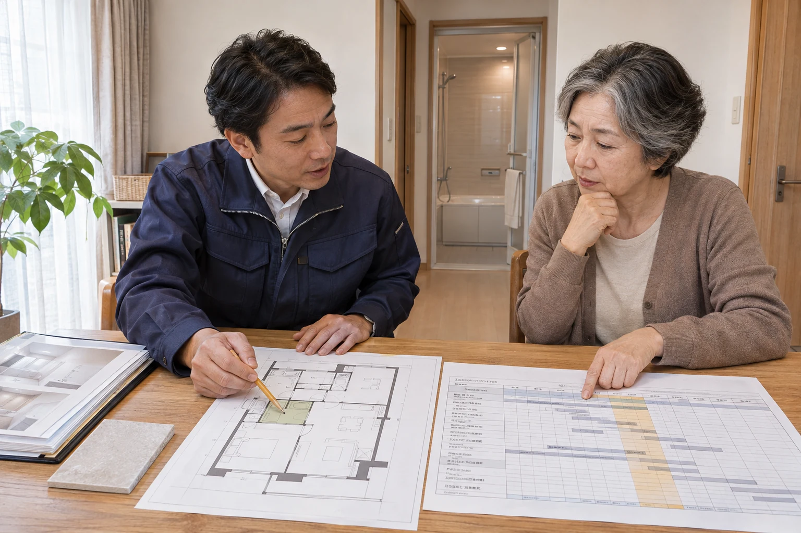

総会の封筒を開いても、細かな表が何枚も並ぶと、どこから読めばいいか迷いますよね。「積立金が上がるらしい」と聞くと、自宅のリフォームにいくら使ってよいかも気になります。
まず知りたいのは、次に大きな工事をする年、その後のお金の残り方、自分の支払額の三つ。手元の資料を開きながら、読む場所と質問の仕方を一緒に確かめましょう。
分厚い総会資料は、まず三つの数字から
公開日：
 文｜エイスケ（住宅と教育の専門家）
文｜エイスケ（住宅と教育の専門家）

総会の封筒を開いても、細かな表が何枚も並ぶと、どこから読めばいいか迷いますよね。「積立金が上がるらしい」と聞くと、自宅のリフォームにいくら使ってよいかも気になります。
まず知りたいのは、次に大きな工事をする年、その後のお金の残り方、自分の支払額の三つ。手元の資料を開きながら、読む場所と質問の仕方を一緒に確かめましょう。
封筒から、最新の長期修繕計画、資金計画、直近の総会議案書・議事録を探します。資金計画は長期修繕計画の後ろに付いていることもあります。見当たらなければ、管理会社や理事会へ「工事の予定と、積立金の見通しが分かる最新版を見せてください」と聞いてみてください。
長期修繕計画は、共用部分の外壁・屋上・設備などを、いつ、いくらで直すかを見通す資料です。修繕積立金はその工事に備えるお金。日常の清掃などに使う管理費と分けて確認します。
作成日・見直し日を見たら、工事費が大きくなる年を一つ選び、その列を上から下へ追ってみましょう。たとえば外壁工事ならベランダの使用、給排水管工事なら断水や室内への立ち入りが関係することがあります。
総会資料では、同じ工事や積立額の変更が「検討中」「計画上の予定」「決議済み」のどれかも確かめます。予定表に載っている年を、そのまま確定した工事日として受け取らないのがポイントです。
資金計画の「修繕積立金残高」「次期繰越金」などの行を探します。名前が違う場合は、年末に残るお金の欄を聞きましょう。その年の収支と、積み立ててきた残高は別の数字です。
| 見る数字 | 今年 | 来年 |
|---|---|---|
| 年の初めの残高 | 5,000 | 2,600 |
| その年の収入 | ＋1,200 | ＋1,200 |
| その年の工事費 | −3,600 | −4,200 |
| 年末の残高 | 2,600 | −400 |
他の入出金・借入がないとした説明用の例です。実際の計画は、記載されたすべての収入・支出と金額の単位を確認してください。
今年は工事費が収入を上回っても、積み立てたお金で払えて、2,600万円が残ります。一方、来年末は400万円不足する計算です。このように、残高がマイナスになる年があれば、いつ、どう補う計画なのかを聞きます。
残高がプラスの場合も、その下の注記を読んでください。将来の積立金増額、一時金、借入を織り込んでいるかもしれません。「この残高は、今の月額を続けた場合ですか。増額する前提ですか」と聞くと、表の見方がはっきりします。
工事費の前提が古い場合もあるので、「最近の見積や工事費を踏まえた計画ですか」と添えておくとよいでしょう。
全体のお金がつかめたら、次は自宅の負担です。部屋によって負担額が違うことがあるため、自宅の住戸で、いつから、いくらに変わるかを確認します。
計算例：月1万5,000円が2万円になるなら、増える額は月5,000円。1年では6万円です。
この年額を、生活費や自宅のリフォーム予算と並べてみてください。一時金が予定されていれば、金額と支払時期も別に書きます。借入が計画に含まれる場合は、返済が今後の積立額にどう影響するのかも聞きましょう。
家計へ写す三行メモ
今の月額：＿＿円 → ＿＿年から＿＿円
1年で増える負担：＿＿円
一時金の予定・金額・時期：＿＿
近隣のマンションとの高い・安いだけでは、必要額は判断しにくいものです。エレベーターや機械式駐車場など、備える設備も違います。「この金額には、どの工事まで含まれますか」と自分の建物の中身を確かめましょう。
水まわりを替える予定があるなら、施工店へ共用部の工事予定を見せてください。浴室を新しくしたあとに、配管工事でまた内装を開くような行き違いを減らすためです。
管理会社・理事会には「配管の工事予定はありますか。住戸内まで工事が入りますか」、施工店には「今回の交換と一緒に確認したい配管はありますか」と聞きます。大規模修繕の予定があっても、配管工事を含むかどうかは個別の計画で確認します。

窓や床の改修も、管理規約・使用細則の条件と申請方法を確認してから進めます。いま漏水や故障で困っている場合は、その症状を先に伝え、必要な修理と時期を合わせられる改修を分けて相談しましょう。
① 次の大きな工事は、いつ、何をする予定ですか？
② その後の残高は、増額や一時金を含めた数字ですか？
③ 私の住戸はいくら変わり、どこまで決議済みですか？
「増額するとしたら、1年でいくら変わる？」。自宅の改修費と一緒に書いておくと、どの工事にいつお金を使うか話しやすくなります。
共用部の給排水管、窓・サッシ、専有部の水まわり設備、外壁・屋上防水
部屋・建材・設備から機能を確かめる ↗関連記事
この記事を書いた人｜エイスケ
1986年生まれ。実家の工務店・不動産に10年間従事したのち、教育の世界へ。住宅と教育、両方の視点から「豊かな暮らし」をテーマに執筆します。※本コラムは筆者個人の見解・経験に基づくものです。最終的な判断は各分野の専門家にご相談ください。